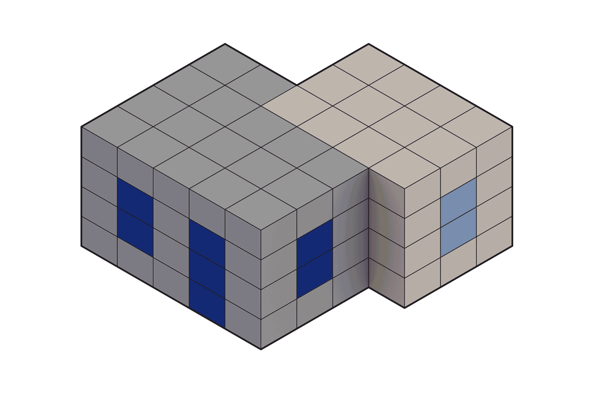

Masterthesis - TU Delft 2023 - Linked
Supervisors: Dr. P. Nourian, Prof. Dr.-Ing. T. Klein, H. Hoogenboom, S. Azadi
Computational Design ArchitectureOne million homes will be needed in the Netherlands by 2030. Prefabrication in the construction industry can contribute to construct affordable houses, but that results often in standardized and not customized designs. These repetitive designs can be overcome through the introduction of mass-customization in architecture. Computational Architectural Design offers the possibility to tackle mass-customization through developing tools to let the user easily customize a design while providing guidelines and feedback towards a successful building design. This can be done by discretising a building into building blocks that can be controlled through a computational workflow. This project elaborates on the potential of developing a design tool that allows the customization of houses through discrete building information modelling.
Since the housing design process is a complex and multi-layered problem, the process is broken down into the
sub-problems of topological design, building product development, configuration, and data export. For these
steps, algorithms from the gaming industry are tested to improve the participation of the end user through a
simplification of the design process. Through design grammars, a relational data structure is created that is
compatible to the BIM environment of the industry. The evolved methods are applied to the test case of a
rowhouse design in Delft to predict the possible impact of the design tool. The results of this are set in the
context of the AEC industry. Check out the website of the
genesis lab for more information about this kind of
work